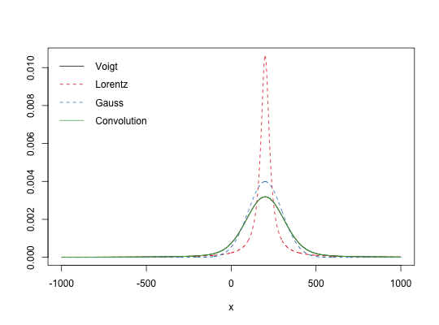

Voigt distribution
Lorentzian distribution
Gaussian distribution
Voigt(x, x0, sigma, gamma, real = TRUE, ...) Lorentz(x, x0, gamma) Gauss(x, x0, sigma)
numeric or complex vector
Voigt: Voigt lineshape function
Lorentz: Lorentzian lineshape function
Gauss: Gaussian lineshape function
## should integrate to 1 in all cases integrate(Lorentz, -Inf, Inf, x0=200, gamma=100)#> 1 with absolute error < 1.2e-06integrate(Gauss, -Inf, Inf, x0=200, sigma=50)#> 1 with absolute error < 6.4e-06integrate(Voigt, -Inf, Inf, x0=200, sigma=50, gamma=100)#> 1 with absolute error < 7.6e-09## visual comparison x <- seq(-1000, 1000) x0 <- 200 l <- Lorentz(x, x0, 30) g <- Gauss(x, x0, 100) N <- length(x) c <- convolve(Gauss(x, 0, 100), rev(Lorentz(x, x0, 30)), type="o")[seq(N/2, length=N)] v <- Voigt(x, x0, 100, 30) matplot(x, cbind(v, l, g, c), t="l", lty=c(1,2,2,1), xlab="x", ylab="")legend("topleft", legend = c("Voigt", "Lorentz", "Gauss", "Convolution"), bty="n", lty=c(1,2,2,1), col=1:4)